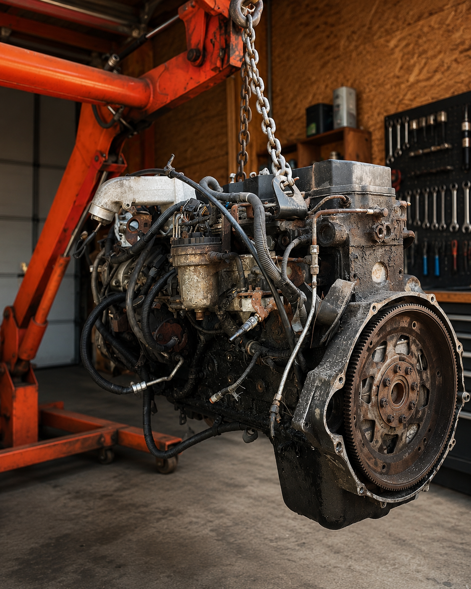

Project 03
Engine Diagnostics
Engine tear-down, inspection, and analysis work focused on understanding failure points, maintenance needs, and reliability improvements.

Problem
Mechanical systems fail for specific reasons. The goal was to inspect engine components and connect observed wear or damage to system behavior.
Constraints
- Careful disassembly and documentation
- Component condition and tolerances
- Reliability and performance tradeoffs
Process
The work emphasized systematic inspection: breaking the engine into understandable subsystems, identifying issues, and reasoning from evidence.
Result
The project built practical diagnostic skill and a stronger intuition for how design, use, maintenance, and failure connect in real hardware.